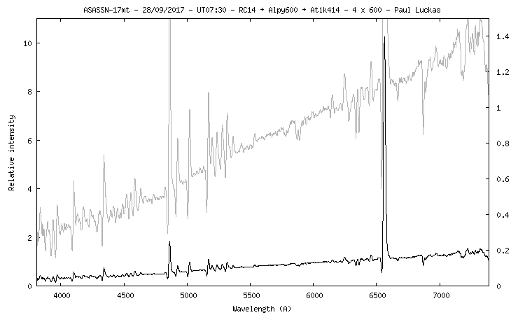

Confirmation of the Nova candidate ASASSN-17mt was achieved in the early hours of September 29 local time, a few days after the announcement. Additional information about the spectrum of this classical nova acquired as it entered the Fe curtain stage can be viewed on ATel #10795.
